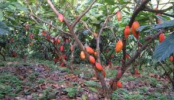
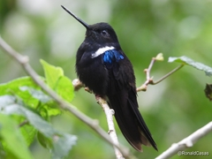
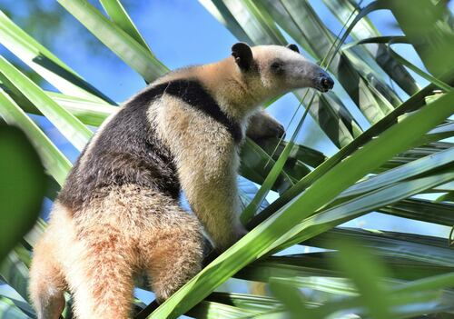
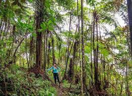
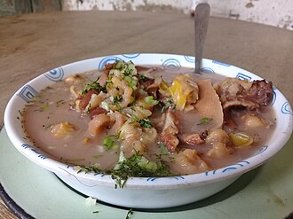
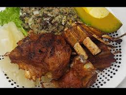

San Vicente de Chucurí fue fundado el 7 de septiembre de 1876 por Sacramento Tristancho, aunque inicialmente el caserío se conocía como “La Angostura”. Más tarde, el 6 de octubre de 1881 fue elevado a aldea y finalmente adquirió la categoría de municipio el 30 de septiembre de 1887.

El nombre combina el de su santo patrono, San Vicente Ferrer, y la palabra Chucurí, de origen indígena (Yariguí) que algunos interpretan como “canto del cielo” Durante su evolución histórica, el pueblo mantuvo su tradicional plaza con calles empedradas y su primer alcalde fue su mismo fundador. En el siglo XX se construyeron la primera iglesia (1878), líneas de teléfono y telégrafo (1908-1916), acueducto y energía eléctrica (1925), y la carretera hacia Barrancabermeja (1932). San Vicente sobrevivió a épocas de conflicto armado reciente y ha mantenido viva la memoria de esas décadas en espacios como la Casa de la Memoria Histórica. Su población, de unos 34.000 habitantes (2015), es conocida como “chucureños”, un gentilicio que destaca la arraigada identidad campesina de la comunidad. A lo largo de los años San Vicente ha sido reconocido como “la capital cacaotera de Colombia” debido a la fertilidad de sus tierras: el cacao representa más del 50 % de la producción nacional y otros cultivos destacados son el aguacate y el café. Estas riquezas agrícolas han dado sustento a la economía local y motivan fiestas tradicionales (Festival del Cacao en julio) y nuevas iniciativas agroindustriales.
San Vicente de Chucurí se ubica en el noroccidente de Santander, en la provincia de Mares, a unos 94 km de Bucaramanga. El municipio cubre 1.195 km²con una cabecera a 693 m de altitud, por lo que el clima es cálido-húmedo (promedio ~13–27 °C) . Limita al norte con Barrancabermeja y Betulia, al oriente con Zapatoca, Galán y Santa Helena del Opón, al sur con Simacota, y al occidente con Simacota y Barrancabermeja . El relieve es montañoso: la cabecera se sitúa en el Valle Medio del Magdalena sobre el río Chucurí (afluente del Sogamoso), mientras que el territorio está cruzado por las estribaciones de la Cordillera de la Paz (rama de la Cordillera Oriental). Hacia el este se extiende la Cuchilla del Ramo y al sur se encuentran los Montes de María. A lo largo del municipio confluyen las cuencas de los ríos Magdalena y Sogamoso, y cerca está la gran represa Hidrosogamoso (en Betulia), un sitio escénico de turismo y pesca.

Los ecosistemas son muy variados por la amplitud altitudinal: en las partes bajas predominan bosques húmedos tropicales premontanos y montanos, propios del trópico medio, con vegetación exuberante y cultivos de cacao, café y plátano. En las partes altas de la Serranía de los Yariguíes aparecen bosques pluviales montanos. Además, se han registrado páramos andinos entre 2.400 y 3.400 m (unas 7.000 ha en jurisdicción de San Vicente), cubiertos de frailejones y pajonales. Esta diversidad altitudinal hace que el municipio tenga desde temperaturas cálidas en el valle hasta frías en las alturas de páramo, con alta humedad en todo caso.
Cascada La Pita (San Vicente de Chucurí) con caída de unos 60 m de altura. San Vicente de Chucurí sobresale por sus paisajes naturales espectaculares. Uno de los sitios más visitados es la Cascada La Pita, una caída de agua de ~60 m rodeada de abundante vegetación tropical. . El descenso forma pozas cristalinas ideales para bañarse, y llegar implica caminar por senderos ecológicos señalizados. Casi al nivel de la cabecera (a pocos minutos), la Cascada Salto de la India ofrece otro salto impresionante de unos 30 m; también se puede practicar trekking, rappel o simplemente disfrutar del entorno selvático.
![]()
El Salto de la India (30 m) se encuentra cerca del casco urbano y ofrece espacios para senderismo y baños naturales. Otras cascadas notables incluyen el Salto del Caracolí (≈30 m) y la Cascada Salto del Tigre, además de una serie de pozos y “toboganes” naturales en la Quebrada La Platanala. En esta zona selvática se halla la famosa Cueva de los Aviones: un pequeño sistema de cavernas con aguas cristalinas donde habita el vencejo común (conocido localmente como “avión”), junto a múltiples pozos de diferentes profundidades . Las piscinas naturales de La Platanala ofrecen tres grandes piscinas naturales (agua tibia) rodeadas de bosque, perfectas para un día de esparcimiento Para actividades más extremas, hay tours guiados de canyoning, rappel y espeleología en estos saltos y cuevas (contratables en el pueblo).
Además de las cascadas, San Vicente cuenta con rutas de senderismo ecológico de larga distancia. El Camino Real de Lenguerke (38 km) conecta San Vicente con Zapatoca a través de la Serranía de los Yariguíes (dificultad alta) . Para senderismos más urbanos, el Parque Ecológico Miraflores (en el mismo casco urbano) es un parque abierto al público con senderos, áreas deportivas, monumentos culturales y zonas verdes om . Aunque el Parque Nacional Natural Serranía de los Yariguíes (59.288 ha) permanece cerrado al público, se reconoce su inmensa biodiversidad: fue el bosque más conservado de Santander y sube hasta 3.400 m

. Finalmente, no puede faltar el Centro de Memoria Histórica del municipio, espacio cultural y museo gratuito donde se narran los hechos sociales y comunitarios recientes, especialmente las secuelas del conflicto armado (abierto jueves a domingo). También hay zonas con petroglifos precolombinos (etnia Yariguíes) en lugares como Angosturas y otras veredas, muestra de la herencia indígena local.

La cultura de San Vicente de Chucurí es eminentemente rural y cafetera-cacaotera. La mayoría de sus habitantes son campesinos dedicados a la agricultura familiar. Esto se refleja en las tradiciones y festividades: además de las ferias municipales de noviembre, destacan la fiesta religiosa del Corpus Christi en junio y la Fiesta del Retorno (cada dos años en octubre, para reunir a la gente de la diáspora), y el Festival del Cacao en julio (en honor a su producto estrella). En estas celebraciones se realiza música folklórica (bambucos, pasillos, torbellinos y obras de danza regional), concursos típicos y exposiciones de productos locales. Igualmente, la Semana Santa chucureña es muy sentida en la comunidad.
La gastronomía local combina productos de la región. El más reconocido es el cacao Chucureño (de fama mundial): se dice que sus frijoles han sido premiados en París por su aroma y sabor. También se cultiva un café andino aromático y aguacates enormes y cremosos, considerado uno de los “tesoros mejor guardados” del municipio. En fiestas y encuentros sociales no faltan además la cuajada, el queso campesino, la miel de caña y el tradicional guarapo de caña. La artesanía y las manifestaciones folclóricas también son parte de su identidad: en la Villa hay grupos de danza local (“danza campesina”) y festivales de tamboras y gaitas. Monumentos emblemáticos como los dedicados al aguacate y al cacao en la plaza reflejan el orgullo agropecuario. En conjunto, la cultura chucureña mezcla el legado mestizo del campo colombiano con la calidez y amabilidad de su gente, mostrando un estilo de vida sencillo pero orgulloso de su tierra.
La biodiversidad de San Vicente de Chucurí es impresionante. En total se han registrado 2.082 especies de flora y fauna en el municipio (cerca del 14,2 % de la riqueza biológica de Santander), de las cuales 139 son endémicas de la región. Entre los animales destacan las aves: en la Serranía de los Yariguíes se han confirmado 501 especies de aves, 15 de ellas endémicas (varias amenazadas internacionalmente). Esto convierte al área en un lugar privilegiado para el avistamiento de aves. De hecho, la Reserva ProAves Reinita Cielo Azul (creada en 2005 a 30 km del municipio) fue la primera reserva de América del Sur dedicada a conservar un ave migratoria, la Reinita Cielo Azul (Setophaga cerulea). También abundan mamíferos andinos amenazados en la serranía: por ejemplo el oso de anteojos (oso andino) y el jaguar han sido registrados en la región.
![]()
La flora local es rica: se han reportado unas 903 especies de plantas vasculares en el parque de Yariguíes. Allí crecen árboles nativos emblemáticos que hoy están amenazados o son de gran importancia, como el roble andino (Quercus humboldtii) y la almanegra (Orphanodendron bernalii). En la época colonial y hasta hace pocas décadas se aprovechaban otros árboles grandes: algarrobo, palo de mora, caoba, cedro y fique, entre otros. La vegetación varía con la altitud: desde bosques húmedos pre-montanos (10–24 °C) llenos de helechos y palmas, hasta bosques montanos con helechos arbóreos y bambús, y arriba zonas de subpáramo y páramo con frailejones. En consecuencia, la región cuenta con importantes esfuerzos de conservación ambiental. Además del Parque Serranía de los Yariguíes (59.000 ha protegidas) y la Reserva Reinita Cielo Azul, existen iniciativas privadas y comunitarias para restaurar bosques y proteger cuencas. El municipio promueve reforestaciones y acuerdos de conservación en cuencas altas. Todo ello asegura que el visitante pueda disfrutar de una naturaleza prístina: desde mariposas tropicales y coloridas orquídeas en los bosques, hasta aves migratorias y colibríes que pasan por los jardines. En resumen, San Vicente de Chucurí ofrece un escenario único de ecoturismo y aventura, donde la historia rural, las tradiciones campesinas y la exuberante naturaleza convergen para el deleite de los viajeros.
El príncipe de Arcabuco, colibrí negro morado o inca negro (Coeligena prunellei) es una especie de ave de la familia Trochilidae, endémica de la vertiente occidental de la Cordillera Oriental de Colombia, en los departamentos de Cundinamarca, Boyacá y Santande
El tamandúa mexicano (Tamandua mexicana) es una especie de mamífero piloso de la familia Myrmecophagidae, una de las dos especies de tamandúa existentes. Habita las selvas centroamericanas y del noroccidente de América del Sur, alimentándose de insectos (hormigas y termitas) como todas las especies de hormigueros
roble colombiano o roble andino (Quercus humboldtii) es una especie de árbol de la familia Fagaceae. Está clasificada en la Sección Lobatae; del roble rojo de América del Norte, Centroamérica y el norte de América del Sur que tienen los estilos largos, las bellotas maduran en 18 meses y tienen un sabor muy amargo. Las hojas suelen tener lóbulos con las puntas afiladas, con cerdas o con púas en el lóbulo.
La sopa de mute o mute es como se conoce en algunas regiones de Colombia a una sopa típica tradicional.[1] Es un plato típico de la gastronomía de los departamentos ubicados en la Cordillera Oriental de Colombia, especialmente de Cundinamarca y Boyacá, pero uno de los mutes más reconocidos lo encontramos en la región de los dos Santanderes (Norte de Santander y Santander), el mute santandereano. y se prepara a partir de maíz previamente precocido en agua con cenizas de madera quemada; el maíz con este tipo de precocción generalmente adquiere una forma de rosa o palomita, después se lava con suficiente agua a fin de quitar los residuos de lejía y se cuece en agua adicionando pequeños trozos de carne, vísceras de cerdo, res u oveja, papa, habas, arvejas y algún otro vegetal; todo esto condimentando con cilantro, ajo y sal.
consiste en una especie de cocido o estofado bastante caldoso a base de carne (o menos frecuentemente pescado), tubérculos y raíces (puede ser patata, yuca, ñame o malanga) y plátano
.jpeg)
oveja criolla utilizada en la producción de carne en Colombia, especialmente en regiones como el Cesar. El consumo más común de su carne es como camuro asado o en el plato camuro con pepitoria, que es un plato tradicional que se prepara asando la carne después de cocinarla y empanizarla, y sirviéndola con yuca frita.
un plato tradicional de san vicente de chucuri a base de vísceras de cabro, típico de Santander, o una salsa española para guisar carnes.
.jpeg)
a arepa santandereana es típica de Santander, Colombia, con raíces indígenas. Se caracteriza por su textura crocante y sabor intenso gracias al chicharrón y la cocción en leña.
.jpeg)